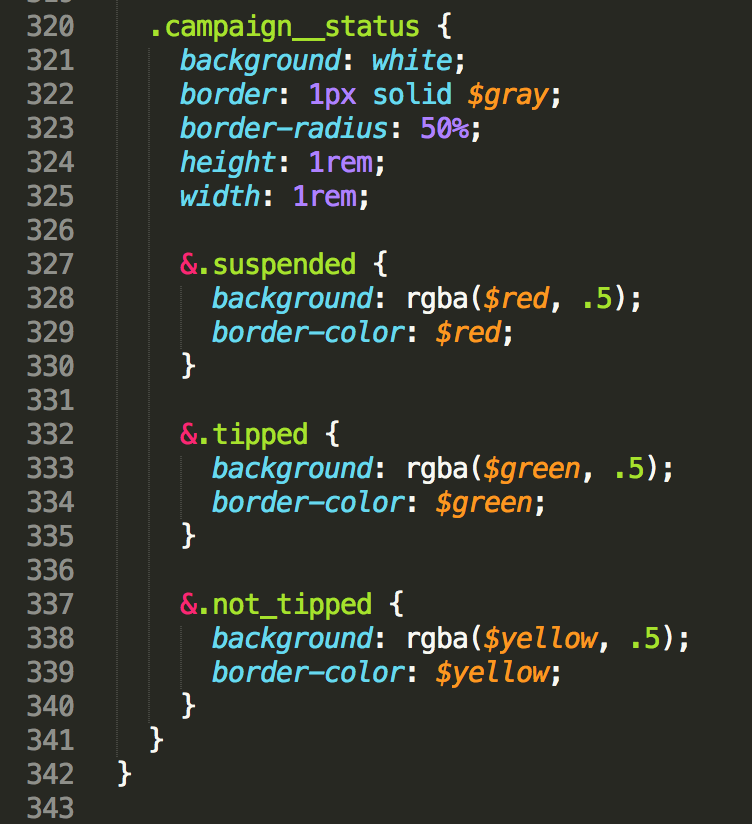

How elements and components stack with eachother.
V2, V5, current (universal)
Homepage, Campaign Page
Uses Twitter Bootstrap (less for css preprocessing)
About Page
Uses a newer version of Twitter Bootstrap (sass for css preprocessing)
Dashboard, Stores, Jobs Page
Roll our own, using sass
Documented on our front end Github wiki.
What is B.E.M.?
BLOCK
ELEMENT
MODIFIER
Speaking of nesting, a good rule of thumb is to never go 4 levels deep.
A list of colors
.color_picker
.color_picker {
list-style: none;
}Each color, a list item
2 underscores
.color_picker__list_item
.color_picker__list_item {
display: inline-block;
}An action applied
2 dashes
.color_picker__list_item--active
.color_picker__list_item--active {
border: 1px solid blue;
}
Currently incomplete, and always evolving
Having the PSDs/design tools and files really help.
You can see the grid, font sizes and weights, and implement the intended work that our design team has carefully crafted.